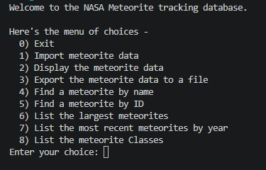
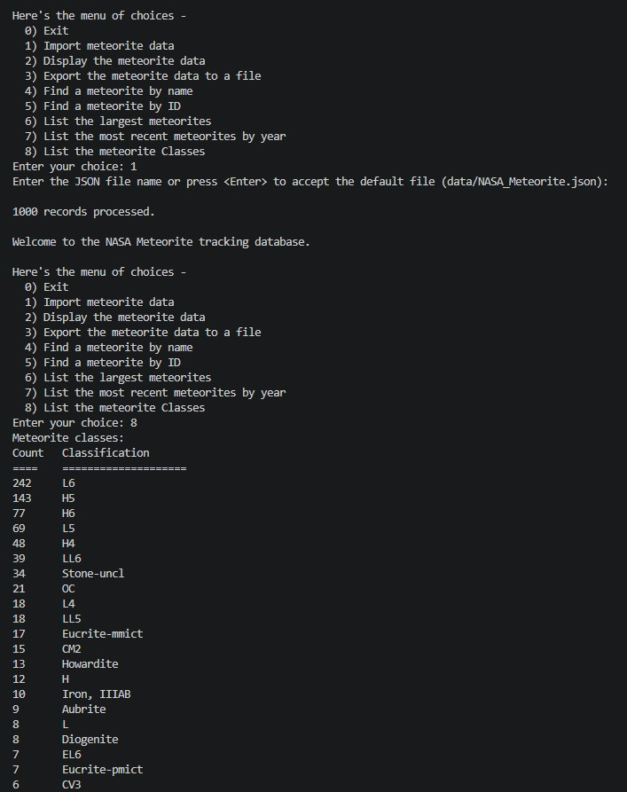
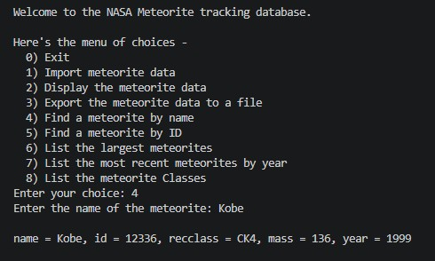

A Java application designed to parse, filter, and analyze NASA meteorite landing data. This project demonstrates intermediate object-oriented design patterns, JSON data handling, and an interactive user interface.
Project Walkthrough
Project Screenshots


